7 月 14 日：Video Generation Models are General-Purpose 等视觉表征论文归档
本页按日期归档近期论文，保留优先级、主题、来源与方法线索，方便回看同一批工作的研究脉络。
先读 Video Generation Models are General-Purpose。把大规模视频生成 backbone 当作通用视觉预训练信号，并直接和 V-JEPA/VideoMAE 等范式比较。 其余论文按 P1/P2 与主题顺序扫读，重点看方法图、消融设置和是否能迁移到通用视觉表征。
论文索引
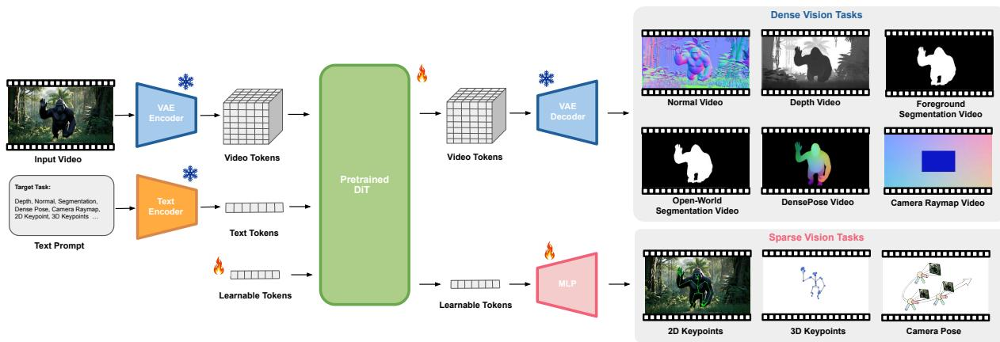
Video Generation Models are General-Purpose Vision Learners
高相关；详见方法、贡献和实验边界。
方法：把大规模视频生成 backbone 当作通用视觉预训练信号，并直接和 V-JEPA/VideoMAE 等范式比较
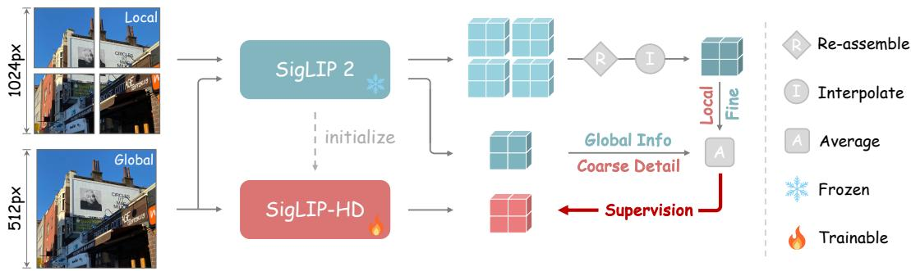
SigLIP-HD by Fine-to-Coarse Supervision
高相关；详见方法、贡献和实验边界。
方法：在 SigLIP 2 上用 fine-to-coarse supervision 提升同等推理预算下的视觉 token 质量
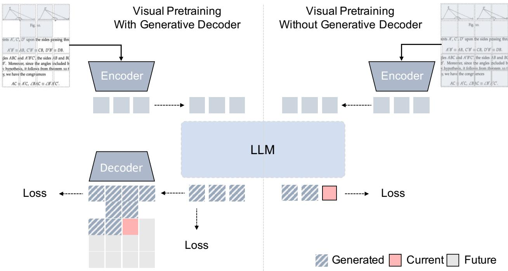
Scalable Visual Pretraining for Language Intelligence
高相关；详见方法、贡献和实验边界。
方法：系统研究 unsupervised visual pretraining 对语言智能的贡献，强调文档/网页的视觉结构不应被纯文本化丢弃
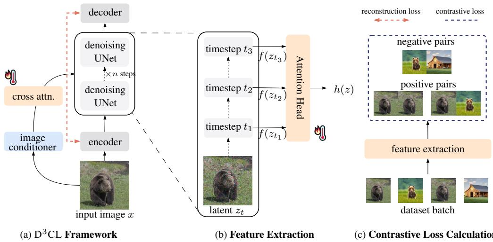
Probing Diffusion Denoising Dynamics for Contrastive Representation Learning
高相关；详见方法、贡献和实验边界。
方法：把 diffusion denoising timestep 当作随机视图，加入 contrastive objective 来学习判别表征
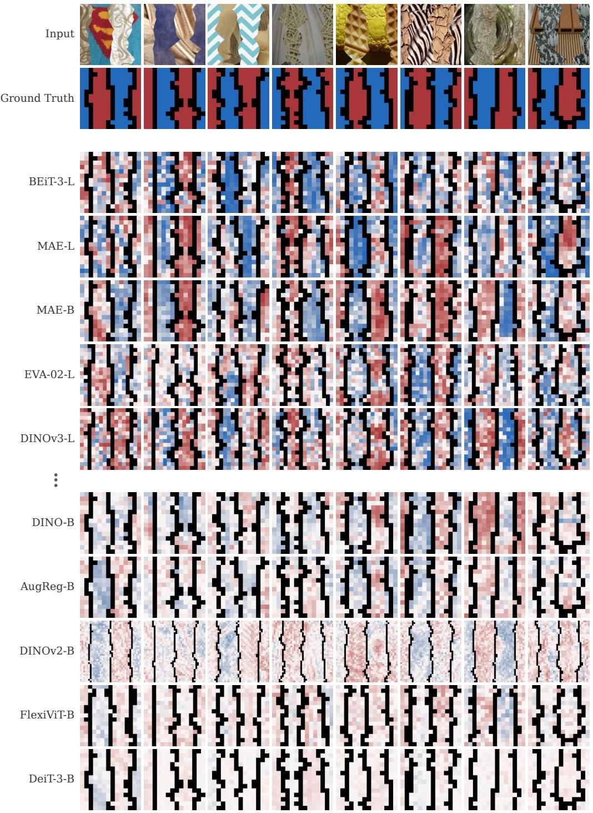
Vision Transformers Learn Gestalt-Like Figure-Ground Cues from Natural Images
高相关；详见方法、贡献和实验边界。
方法：分析 supervised/self-supervised ViT 是否从自然图像统计中学到 Gestalt-like figure-ground cues
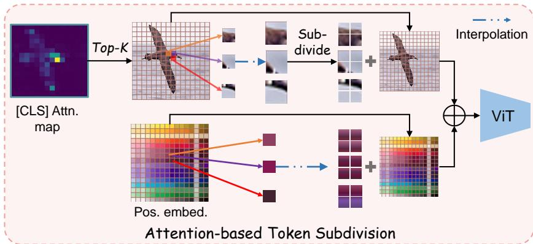
Subtoken Vision Transformer for Fine-grained Recognition
中高相关；详见方法、贡献和实验边界。
方法：选择性把关键 patch 细分成 subtokens，可改善 DINOv2 在 GCD/fine-grained novel category 上的表现
Similarity search generalisation in contrastive learning with InfoNCE loss
中高相关；详见方法、贡献和实验边界。
方法：从 similarity search generalization 角度重解释 InfoNCE，而不只停留在 MI/alignment-uniformity
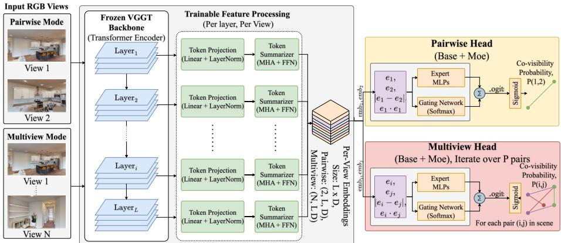
What VGGT Knows About Overlap: Probing Geometric Foundation Models for Co-Visibility
中高相关；详见方法、贡献和实验边界。
方法：冻结 VGGT 后探测其几何 foundation representation 是否隐式编码 co-visibility
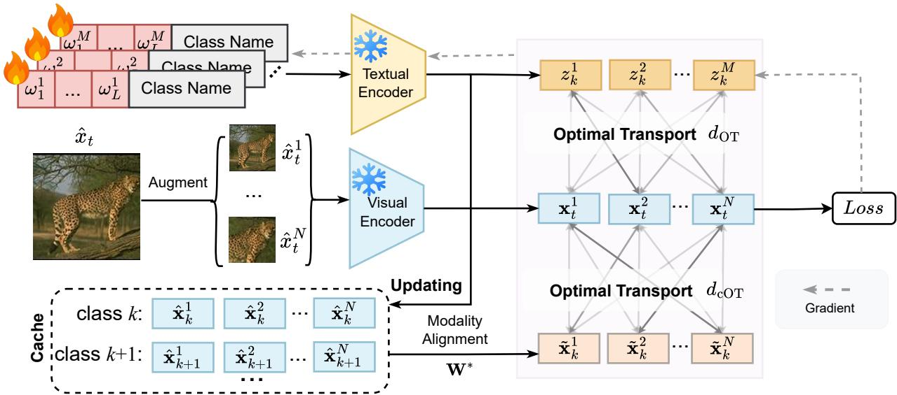
Robustifying Vision-Language Models via Test-Time Prompt Adaptation
中高相关；详见方法、贡献和实验边界。
方法：测试时用分布级 alignment 强化 CLIP/VLM adversarial robustness，关注预训练视觉-语言表征的脆弱性
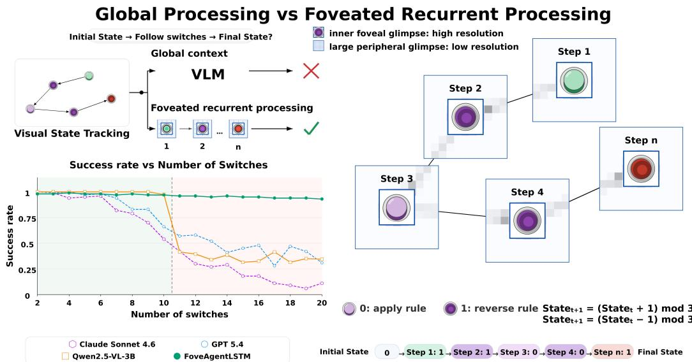
On Locality and Length Generalization in Visual Reasoning
中相关；详见方法、贡献和实验边界。
方法：用局部/顺序视觉策略研究 visual reasoning 的 length generalization，与全局一次性 ViT 的 shortcut 问题相关
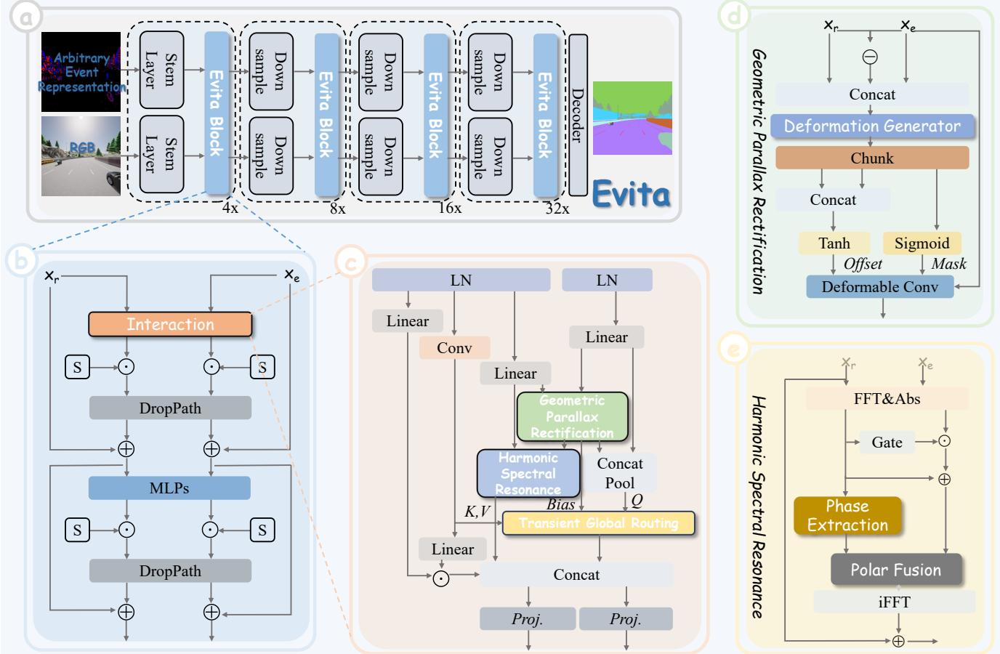
Weaving Light and Time: Unified Harmonic-Geometric Representation Learning for Dense RGB-Event Parsing
中相关；详见方法、贡献和实验边界。
方法：多模态 RGB-event dense parsing 的统一 backbone 与 stochastic event representation mixing pretraining 有方法迁移价值
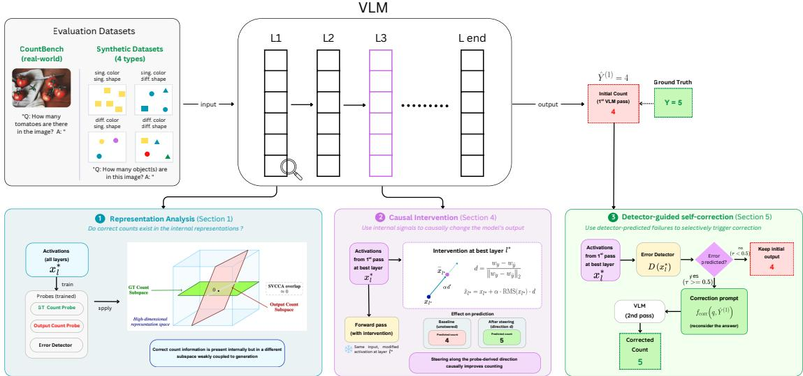
The Count Is There, but Misaligned: Understanding and Correcting Counting Failures in VLMs
中相关；详见方法、贡献和实验边界。
方法：用 activation probe 证明 VLM 可能内部知道 object count 但输出方向错位
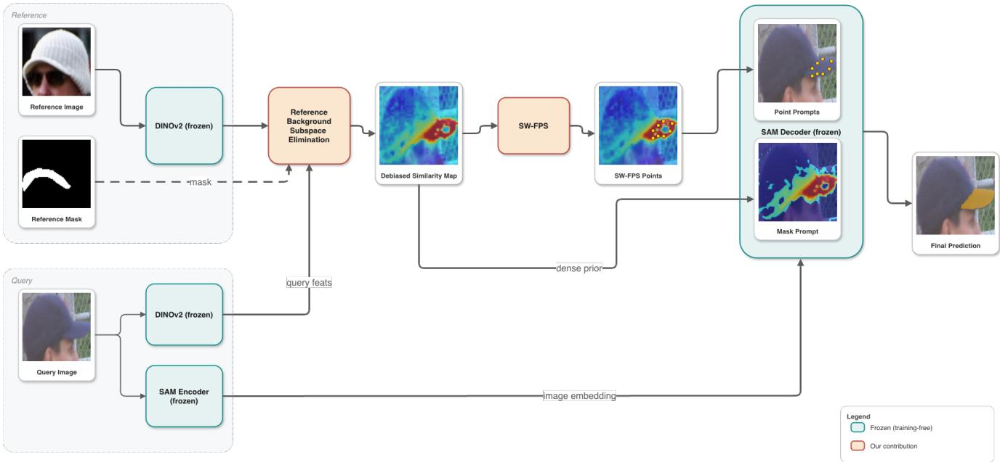
REBASE: Reference-Background Subspace Elimination for Training-Free In-Context Segmentation
中相关；详见方法、贡献和实验边界。
方法：用 reference-background subspace elimination 清理 VFM cross-image similarity map，偏下游但对特征匹配有启发